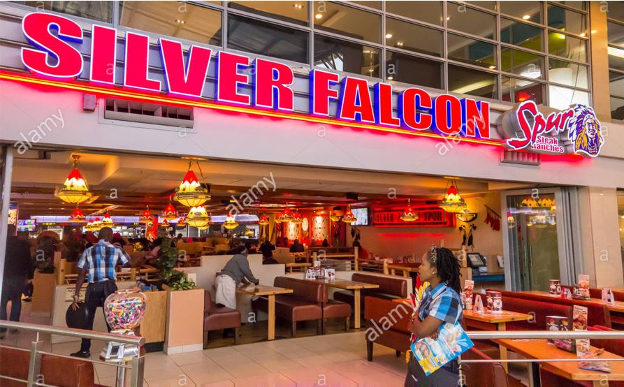
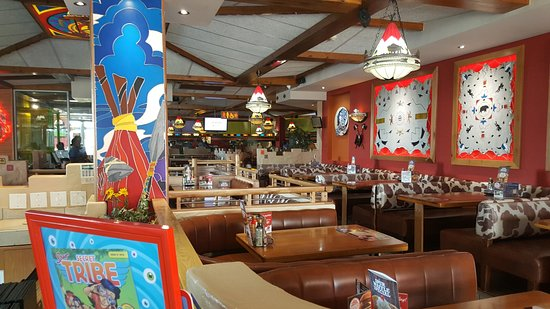

Spur Corporation is a steakhouse franchise restaurant chain originating from South Africa with a focus on family dining. The head office of Spur Corporation is situated in Century City, Cape Town. Although the founding and flagship brand is the Spur steakhouse restaurants, the company owns a number of other, predominantly South African, restaurant brands. Spur Steak Ranches is a themed South African family favorite and is fondly known as "the official restaurant of the South African family"; as such, most Spur restaurants include a children's play area..
Spur Steak Ranches is a subsidiary of Spur Corporation, one of the largest restaurant companies in South Africa. It has its headquarters in Century City, Cape Town, with regional offices in Johannesburg and Durban as well as an International Office in Amsterdam, The Netherlands, supporting the company’s international operations. Spur Steak Ranches’ contribution to Spur Corporation’s restaurant turnover is 61%. Restaurants are owned by franchisees or directly by the company. As of 31 December 2018, Spur Steak Ranches had 323 stores located in 15 countries. The total restaurants in South Africa is 284 with 39 in other countries..
 